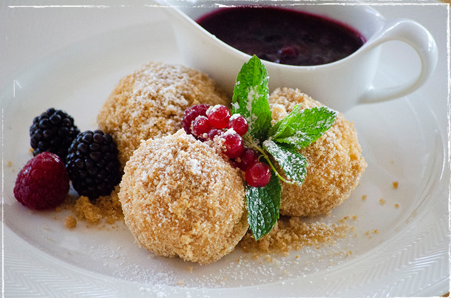

Curd Cheese Dumplings (Topfenknödel)
Home

Description
Ingredients (for 2 people):
- 1 pack of lasagna noodles
- 250g cheese (e.g. Gouda)
For the meat filling:
- 500g of minced meat
- 500ml of tomato sauce
- 1 spoon of tomato purée
- 1 Onion
- Salt
- Pepper
For the bechamel:
- 150ml milk
- 50g butter
- 50g flour
- A handful of cheese (e.g. Gouda)
- Salt
- Pepper
Steps:
- Cut the onion into small pieces and fry it in oil in a pot
- Add the meat to the onion and fry it until it is well-done
- Add the tomato purée and mix everything
- Add the tomato sauce and reduce the heat after it turned hot. It shouldn't cook.
- Add salt and pepper to your liking
- For the bechamel we need to melt the butter in another pot
- Add the flour and mix everything. Watch that nothing gets burned
- Add the milk and a handful of cheese and mix everything. Reduce heat. It should be hot but not cooking
- Add salt and pepper to your liking
- Prepare a casserole and coat it with butter
- Add a thin layer of the tomato meat sauce
- Put one layer of lasagna noodles on it.
- Now there is again one layer of tomato meat sauce followed by a layer of bechamel, cheese and then again lasagan noodles
- The last layer should be one of lasagna noodles with cheese on top
- Put the lasagna in the oven for 30 minutes at 200 degrees Celsius.